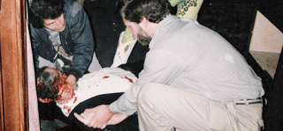

It is one of nature’s ironic mercies that the same disease responsible for disfiguring Sheik Omar Abdel-Rahman’s face left him blind, thereby sparing him the sight of his Gorgon-like features. The sheik died from complications of that disease – diabetes – at age 78 in a federal prison cell in North Carolina, a peaceful end to a long life largely devoted to terrorist violence. He had lived at taxpayer expense for roughly one-third of that life. For the better part of a decade prior to his June 1993 arrest, Sheik Omar had covertly been on the federal payroll as a CIA asset.

Abdel-Rahman was the “spiritual leader” of the terrorist
cell that carried out the February 26, 1993 bombing of the World Trade Center
in New York City. Six people were killed in that attack, which inflicted $500
million in damage and would have been apocalyptic in scope if the bomb-laden
Ryder truck used in the plot had been placed in the proper section of the
basement parking garage. The plan was to
send one of the towers toppling into the other.
A native Egyptian, Sheik Omar boasted
of his involvement in the assassination of President Anwar Sadat in 1981. Six
years later the U.S. State Department placed Sheik Omar's name on its
"watch list" of non-Americans believed to be involved in terrorism.
That did not prevent the CIA from enlisting Sheik Omar as a "valuable
asset" in covert operations involving the Afghan mujahideen during the
1980s.Between 1980 and 1989, the CIA pumped more than $3 billion in aid into the Islamic resistance to the Soviet occupation of Afghanistan. Following more than a decade and a half of combat in that country, Americans have come to understand how tenaciously Afghans fight to expel foreign occupiers – and the fact that the country’s tribal culture is an impenetrable mare’s nest. It should also be clear by now that the CIA has an uncanny instinct for supporting the worst of the contending factions in any country upon which its gaze descends. Author Kurt Lohbeck documented in his study Holy War, Unholy Victory: Eyewitness to the CIA's Secret War in Afghanistan that during the mid-1980s the CIA invested most of its aid in the least combat-worthy and most anti-American factions of the mujahideen. Among the CIA's dubious beneficiaries was Sheik Omar.
Writing in the May 1996 issue of The Atlantic Monthly, foreign correspondent Mary Anne Weaver recalled that it was in Peshawar, Pakistan, that Sheik Omar "became involved with U.S. and Pakistani intelligence officials who were orchestrating the war" against the Soviets, and that the "sixty or so CIA and Special Forces officers based there considered him a 'valuable asset' ... and overlooked his anti-Western message and incitement to holy war because they wanted him to help unify the mujahideen groups."
Sheik Omar and his associates created an institution in Peshawar, Pakistan, called the Service Office, which recruited Muslims from around the world as volunteers to fight the Soviets in Afghanistan. Branches of the Service Office were created throughout Europe and the United States, thereby providing a ready slush fund for terrorists and anti-Western agitators. While the Service Office sluiced money into the coffers of terrorists, Sheik Omar preached his gospel of jihad in Pakistan, Egypt, and Saudi Arabia, and in Islamic population centers in Turkey, Germany, England, and even the United States — despite his listing on the State Department's "watch list."
Sheik Omar's status as a “valuable asset” to the CIA didn’t end after the Red Army vacated Afghanistan in early 1989.
On May 10, 1990, Sheik Omar was granted a one-year visa from a CIA agent posing as an official at the U.S. Consulate in Khartoum, Sudan, and he arrived in New York in July 1990. In November of the same year Sheik Omar's visa was revoked, and the State Department advised the Immigration and Naturalization Service to be on the lookout for him. So attentive was the INS to this advisory that it granted Sheik Omar a green card just five months later.
This wasn’t a failure of the vetting procedure. It was the peculiar kind of “success” that often facilitates the arrival of capable practitioners of violence who are useful for the Deep State’s domestic operations.
 |
| The killing of Kahane: Clues found -- and hidden -- by the FBI. |

Abouhalima and Nosair were eventually among those convicted of conspiring with Sheik Omar to wage urban warfare in the United States, and in that campaign they made use of skills imparted to them by the CIA and the U.S. military.
During the 1995 conspiracy trial, attorneys for Sheik Omar and his disciples introduced a file documenting that in 1989, the U.S. Army had sent Special Forces Sergeant Ali A. Mohammed – who had been cashiered from the Egyptian Army several years earlier -- to Jersey City to provide training for mujahideen recruits, including Abouhalima and Nosair. Although Omar was regarded as the cabal’s spiritual leader, and Nosair was said to be the signal-caller, US Attorney Patrick Fitzgerald believed that Mohammed was the chief architect of “al-Qaeda’s terrorist infrastructure in the U.S.”
| Catch and release: Mohammed. |

Mohammed’s main role in the 1993 plot was to train and supervise the others. According to Two Seconds Under the World, a book on the 1993 WTC bombing co-written by Newsday’s Pulitzer-winning investigative team, all of this was done under constant FBI surveillance. The Bureau had ample advance notice of what Sheik Omar’s disciples intended to do.
Following the murder of Rabbi Kahane in November 1990, the FBI seized and impounded 49 boxes of documents from Nosair's New Jersey apartment; the cache included bomb-making instructions, a hit list of public figures (including Kahane), paramilitary training materials, detailed pictures of famous buildings (including the World Trade Center), and sermons by Sheik Omar urging his followers to "destroy the edifices of capitalism."
Owing to incompetence or (more likely) something much worse, the FBI made none of the evidence available to New York City Assistant District Attorney William Greenbaum, who prosecuted the case. In fact, the FBI made no investigative use of the material until after the Trade Center bombing in 1993.
Hamstrung by the FBI's decision to withhold the evidence collected at Nosair's apartment, Greenbaum was unable to secure a murder conviction in the killing of Kahane. After being convicted on firearms-related charges Nosair began a seven-year term in Attica prison, where he continued to direct the affairs of Sheik Omar's terrorist network.
By March 1991, Sheik Omar and his associates had seized control of the Alkifah fund, which had by then swollen to an estimated $2 million. The CIA-originated fund helped finance Nosair's trial defense. It was also used to procure many of the bomb components that were assembled under the expert supervision of Afghan terrorist Ramzi Yousef, who was imported by the Sheik Omar network in late 1992.
Yousef was convicted on September 8, 1996 of plotting a 48-hour campaign of bombings against American commercial flights over the Pacific Ocean. The campaign would have targeted a total of 12 jetliners and as many as 4,000 passengers. Yousef met Abouhalima in Afghanistan in 1988, and it was Abouhalima who brought the Afghan terrorist to the United States in September 1992 on behalf of Sheik Omar's network.
Shortly after Yousef's arrival, the FBI subpoenaed two dozen of Sheik Omar's followers and questioned them about the sheik, Nosair, and Abouhalima. However, no arrests were made, no grand jury investigation was launched, and the FBI chose to downgrade its scrutiny of Omar's network — just as plans were being finalized for the Trade Center bombing. This curious decision is even more peculiar in light of the fact that the FBI had obtained intelligence on the network's capabilities and intentions from Emad A. Salem, a former Egyptian Army officer and FBI informant who served as Omar's security guard.
Salem's relationship with the FBI was turbulent, and there were suggestions of impropriety in his personal contacts with FBI handler Nancy Floyd. However, he had repeatedly warned the FBI that Nosair was running a terrorist ring out of his prison cell, and he had supplied detailed descriptions of the Sheik Omar network's plans. But the FBI, professing doubts about Salem's reliability, severed contacts with him seven months before the bombing.
 |
| Appendages of the same beast: CIA asset Omar with FBI informant Salem. |
According to Salem, the FBI had planned to sabotage the Trade Center bomb by replacing the explosive components with an inert powder. The October 28, 1993 New York Times reported that in one conversation Salem recalled assurances from an FBI supervisor that the agency's plan called for "building the bomb with a phony powder and grabbing the people who [were] involved in [the plot]." However, the supervisor, in Salem's words, "messed it up."
Salem recalled that when he expressed a desire to lodge a protest with FBI headquarters, he was told by special agent John Anticev that "the New York people [wouldn't] like the things out of the New York office to go to Washington, DC." Unsatisfied, Salem rebuked Anticev: "You saw this bomb went off and you ... know that we could avoid that.... You get paid, guys, to prevent problems like this from happening."
Perhaps the most remarkable illustration of the depth of the FBI's knowledge of the Sheik Omar network came after the World Trade Center bombing, when the Bureau employed Salem's services as an informant once again. As the Wall Street Journal subsequently reported, from March to June 1993 Salem "helped organize the 'battle plan' that the government alleged included plots to bomb the United Nations and FBI buildings in New York, and the Holland and Lincoln tunnels beneath the Hudson River…. Mr. Salem recruited seven local Muslims to scout targets, plan tactics and obtain chemicals and electrical parts for bombs."
By the time the FBI closed in on the plotters on June 23, it had literally hours of videotapes documenting the conspiracy in intimate detail — including footage of conspirators mixing fertilizer and diesel fuel to build a bomb.
Sheik Omar is presented by the Regime and its heralds as the
incarnation of what we are told is the implacable, all-encompassing menace of
radical Islam. However, his career actually demonstrates that the large-scale
evils not directly created by the Deep State are generally co-opted by it. Omar
embodied Frederic Bastiat’s maxim that government enriches its power by
creating the poison and the antidote in the same laboratory.
My apologies: An accident involving an icy parking lot and gravity's cruel demands -- and a knee suddenly wrenched in a direction contrary to its design specifications -- left me immobilized for a while, and the resulting backlog explains the unusually long hiatus at this page. I appreciate your patience.
Don't forget to visit the Libertarian Institute.
Dum spiro, pugno!
My apologies: An accident involving an icy parking lot and gravity's cruel demands -- and a knee suddenly wrenched in a direction contrary to its design specifications -- left me immobilized for a while, and the resulting backlog explains the unusually long hiatus at this page. I appreciate your patience.
Don't forget to visit the Libertarian Institute.
Dum spiro, pugno!
5 comments:
My understanding is that during the late 19th century the private enterprise Pinkerton Agency was the largest security force in the world, providing great security at a good price. They supposedly recovered up to 90% of stolen property they were hired to secure, the mirror image of today's 'public law enforcement' whose recovery rates are around 10%. Your article about crimes manufactured by government as a strategy to secure power makes me wonder whether the infamous Homestead Strike was not a similarly provoked incident on the part of government looking to create a ruse by which to drive out excellent private enterprise security and replace it with wretched government controlled 'public law enforcement'.
Oddly enough, I just recently finished reading a historical treatment that left me asking precisely the same questions....
Great job putting this info together. I can add one bit to your story that I got by way of a P.D. Scott article. Ali Mohamed was picked up by the RCMP in '93 and then released on the good word of the FBI who explicitly claimed him as an informant. The original link is here: http://www.historycommons.org/entity.jsp?entity=royal_canadian_mounted_police
It is in archive.org, and I saved a copy here: www.mediafire.com/file/fjl0mddsfnlswdh/Royal_Canadian_Mounted_Police.mht
I am tweeting on related topics @misc_CIA_victim
Read the Pinkerton Act, for a real solution to the crap we deal with today. And it's not what 99.9 percent think it's about.
John Adams intoned that this nation 'does not go abroad looking for monsters to destroy', or some close facsimile of such.
Adam's words, as many of his generation, were prophetic. how is this so? we do not have to go abroad looking for monsters to destroy because the world's largest monsters are among us, official and unofficial.
we are in the grip of evil, all around us, and the evil has been and continues to grow. the consolation for those of us who care what is done in our name is that, from history, no man made evil lasts in the same form forever. this includes the domestic evil among us
currently.
Post a Comment